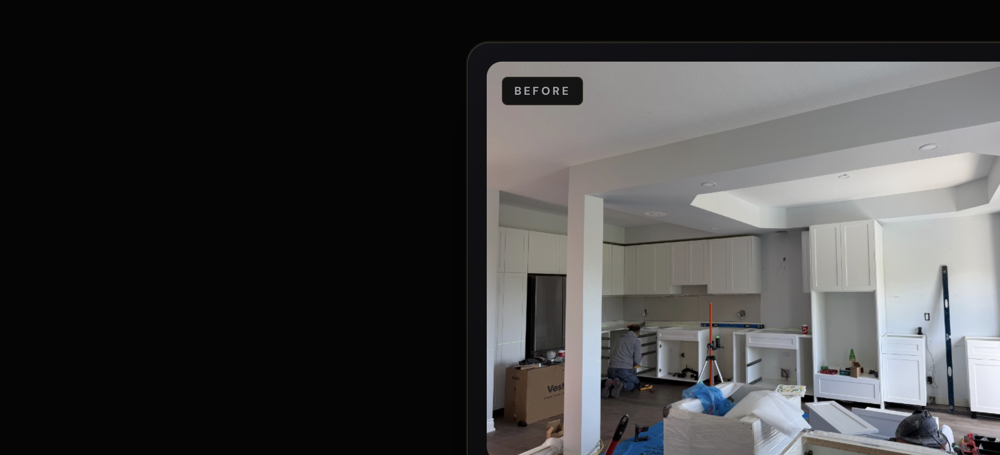
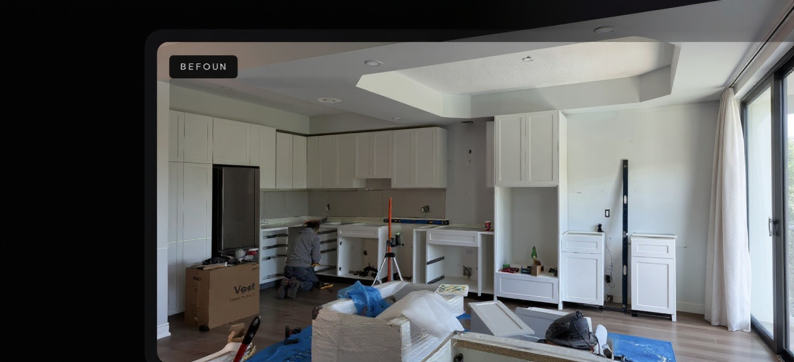
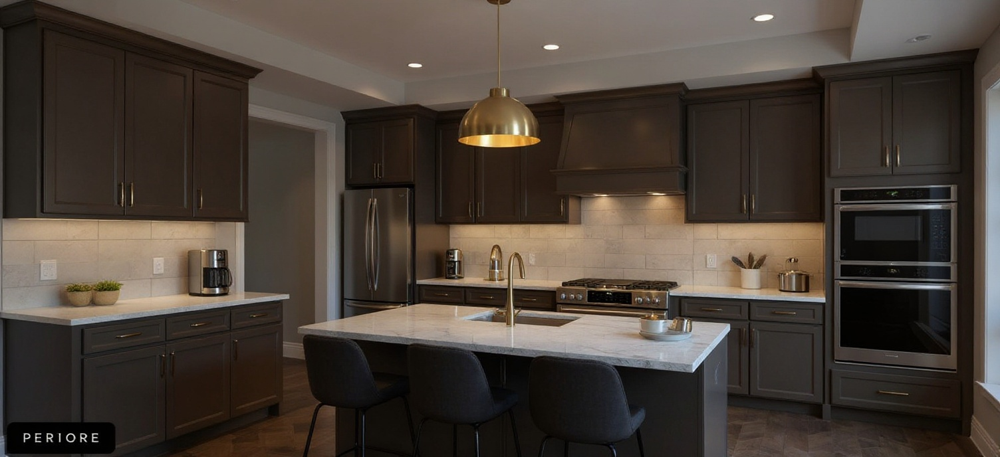
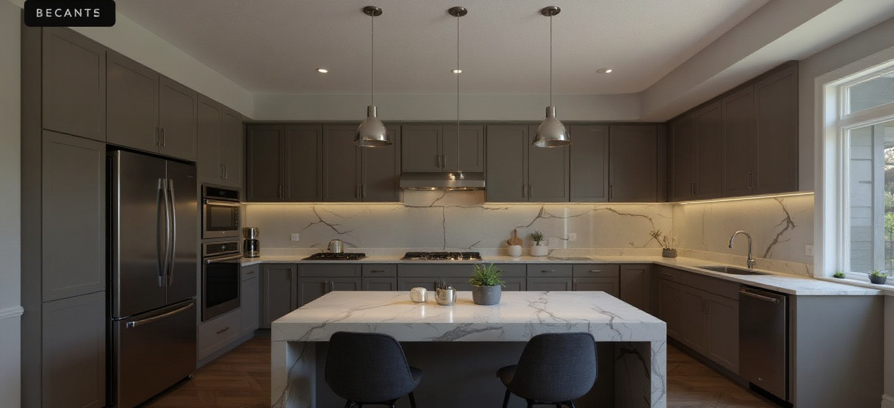

Model: fal-ai/flux-pro/kontext · guidance 3.5 · 2026-06-13T02:29:23.148Z

Original kitchen photo (construction in progress).

Redesign this exact room into a realistic Modern interior design. modern interior design with clean lines, neutral palette, contemporary furniture, minimal clutter, and balanced natural lighting Keep the SAME room structure, walls, windows, floor, ceiling, and camera angle. Only change furniture, finishes, lighting, decor, cabinetry, colors, and materials. Do NOT generate outdoor scenes, streets, bridges, cities, landscapes, or fantasy environments. Preserve the original architecture and room proportions exactly. Create a highly realistic luxury interior rendering.

Redesign this room into a high-end luxury modern kitchen. Preserve: room dimensions, walls, windows, ceiling, camera angle. Replace: cabinetry, countertops, backsplash, flooring, lighting, appliances, hardware, finishes. The result should look like a professionally renovated kitchen worth $100,000+. Do NOT generate outdoor scenes, streets, bridges, cities, landscapes, or fantasy environments. Create a highly realistic luxury interior rendering.

Transform this room into a completely renovated luxury modern kitchen while preserving only the architectural structure. All visible finishes, cabinetry, lighting, colors, and materials should appear newly renovated. Keep room dimensions, walls, windows, ceiling height, and camera angle unchanged. Do NOT generate outdoor scenes, streets, bridges, cities, landscapes, or fantasy environments. Create a highly realistic luxury interior rendering.